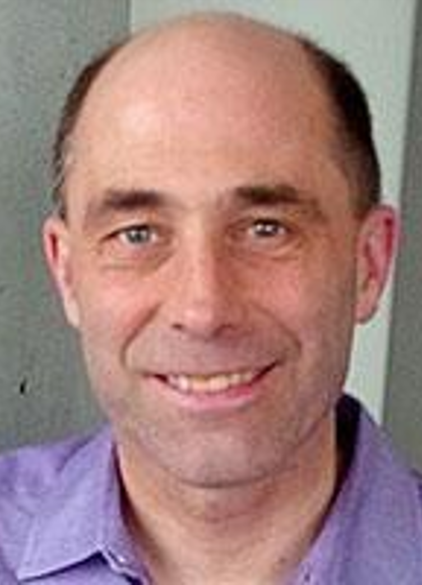
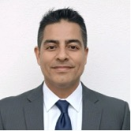

Our Team.
A lean, expert team with decades of computational science and pharmacology experience, built to move fast.

Profile
30 years in computational science, biophysics, and fluid dynamics.
Dr. Kharche leads the Company scientific architecture, platform development, and long-term R&D strategy.
He is a computational scientist specializing in multiscale physiological modeling, cardiovascular dynamics, molecular simulations, and R&D software development. His work integrates applied mathematics, fluid dynamics, ion channel modeling, and high-performance computing to build reproducible biomedical simulation frameworks.
He has authored numerous peer-reviewed publications in computational physiology and cardiovascular sciences, forming the scientific foundation of MVT in Silico.
You can find his previous work on Google Scholar, ResearchGate, and Medline/PubMed.
Core Expertise
- Computational physiology
- Computational cardiology
- Blood flow fluid dynamics (CFD)
- Molecular dynamics
- Scientific software development

Profile
40 years in physiology, pharmacology, and translational research.
Prof. Welsh provides strategic scientific oversight, translational guidance, and intellectual leadership to MVT in Silico life sciences programs.
Prof. Donald G. Welsh is a globally recognized expert in vascular biology, ion channel physiology, and microvascular function. As a Professor at Western University and Distinguished Scientist at the Robarts Research Institute, his research has significantly advanced understanding of arterial regulation and potassium channel signaling.
With over 100 peer-reviewed publications and more than 6,000 citations, his work has had broad international impact in cardiovascular science.
You can find his previous work on Google Scholar, ResearchGate, and Medline/PubMed.
Core Expertise
- Vascular biology
- Ion channel physiology
- Blood flow regulation
- Microvascular networks
- Translational cardiovascular research

Profile
See Victor's profile on LinkedIn.
Company Employees
- Harpreet Kaur. Business Manager. (April 2025 to March 2026).
- Yihang Cheng. R & D officer. (April 2025 to August 2025).
- Alexis Watson (January 2026 onwards).
- Zora Yang. (May 2026 to September 2026).
- Other interns